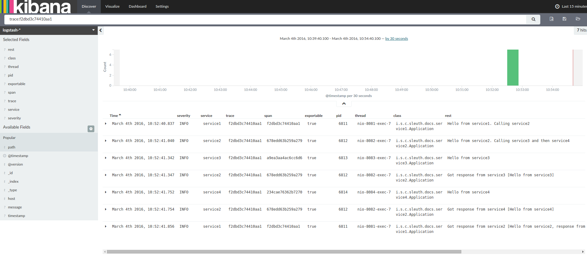

Dave Syer, 2016
Twitter: @david_syer
Email: dsyer@pivotal.io
Add a Correlation ID to logs, and propagate it between processes (e.g. in HTTP or message headers)
2016-03-05 12:07:03.748 INFO [service1,5b7b3ceafd06fceb,5b7b3ceafd06fceb,false] 18487 --- ...
2016-03-05 12:07:03.748 INFO [service1,5b7b3ceafd06fceb,5b7b3ceafd06fceb,false] 18487 --- ...
2016-03-05 12:07:05.540 INFO [service2,5b7b3ceafd06fceb,162e2f236273a756,false] 18487 --- ...
2016-03-05 12:07:05.541 INFO [service2,5b7b3ceafd06fceb,162e2f236273a756,false] 18487 --- ...
Correlated logs are a building block.
You can answer a lot of questions just with standard log analysis tools (ELK, Splunk, etc.)
Recipe:
Apps send logs (stdout) to a central service
Parsing and analysis and visualization
Correlation ID -> unified view of business event
Examples: E(lastic Search)L(ogstash)K(ibana), Splunk, Sumologic, Papertrail, ...

Why is this POST /thing so slow?
+-------------------------------------+
| POST /thing |
+-------------------------------------+
Server Received: 15:31:29:103 Server Sent: 15:31:30:530
v v
+-------------------------------------+
| POST /thing | 1427ms
+-------------------------------------+
First log statement: 15:31:29:103, last one: 15:31:30:530
Server Received: 15:31:29:103 Server Sent: 15:31:30:530
v v
+-------------------------------------+
| POST /thing | 1427ms
+-------------------------------------+
| peer.ipv4 | 1.2.3.4 |
Server is a shard in the wombat cluster, listening on 10.2.3.4:8080
Server log says Client IP was 1.2.3.4
Server Received: 15:31:29:103 Server Sent: 15:31:30:530
v v
+-------------------------------------+
| POST /thing | 1427ms
+-------------------------------------+
| peer.ipv4 | 1.2.3.4 |
| http.request-id | abcd-ffe |
The http response header had request-id: abcd-ffe? Is that what you mean?
Server Received: 15:31:29:103 Server Sent: 15:31:30:530
v v
+-------------------------------------+
| POST /thing | 1427ms
+-------------------------------------+
| peer.ipv4 | 1.2.3.4 |
| http.request-id | abcd-ffe |
Well, average response time for POST /things in the last 2 days is 100ms
I’ll check other logs for this request id and see what I can find out.
Server Received: 15:31:29:103 Server Sent: 15:31:30:530
v v
+-------------------------------------+
| POST /thing | 1427ms
+-------------------------------------+
| peer.ipv4 | 1.2.3.4 |
| http.request-id | abcd-ffe |
| http.content.length | 15 MB |
| http.url | ...&features=HD-uploads |
Ok, looks like this client is in the experimental group for HD uploads
I searched the logs for others in that group. took about the same time.
Client Sent: 15:31:28:500 Client Received: 15:31:31:000
v v
+-------------------------------------------------------+
| POST /some | 2500ms
+-------------------------------------------------------+
+-------------------------------------+
| POST /thing | 1427ms
+-------------------------------------+
^ ^
Server Received: 15:31:29:103 Server Sent: 15:31:30:530
+-------------------------------------------------------+
| POST /some |
+-------------------------------------------------------+
+-------------------------------------+
| POST /thing |
+-------------------------------------+
+---------------------------+
| Sync Store |
+---------------------------+
+--------------------------------------------------------------+
| Async Store |
+--------------------------------------------------------------+
It's like centralized logging, but structured at source
Well-known labels and identifiers
Indexed and queryable
Special purpose query servers and UIs
Distributed tracing systems collect end-to-end latency graphs (traces) in near real-time.
You can compare traces to understand why certain requests take longer than others.
A Span is an individual operation that took place.
A span contains timestamped events and tags.
A Trace is an end-to-end latency graph, composed of spans.
Server Received: 15:31:29:103 Server Sent: 15:31:30:530
v v
+-------------------------------------+
| POST /thing | 1427ms
+-------------------------------------+
| peer.ipv4 | 1.2.3.4 |
| http.request-id | abcd-ffe |
| http.content.length | 15 MB |
| http.url |...&features=HD-uploads |
POST /thing is a span name
427ms is a span duration
Server Received is an event (with a timestamp)
http.request-id=abcd-ffe is a span tag
Tracers propagate IDs in-band, to tell the receiver there's a trace in progress
Completed spans are reported out-of-band, to reduce overhead and allow for batching
Tracers collect timing data and transport it over HTTP or Kafka or (via Spring Cloud) Rabbit.
Collectors store spans in MySQL or Cassandra (or in memory).
Users query for traces via Zipkin's Web UI or Api.
$ java -jar zipkin-server.jar
@EnableZipkinServer
@SpringBootApplication
public class ZipkinServer {
...
}
Then:
$ curl -s localhost:9411/api/v1/services | jq .
[ "service1", "service2" ]
To instrument your application and have it send span data to a collector:
Add spring-cloud-sleuth-zipkin (HTTP transport) or spring-cloud-sleuth-stream (messaging transport)
Optionally set spring.sleuth.sampler.percentage
(default 0.1)
Spans ahoy!
Gitter for Sleuth: https://gitter.im/spring-cloud/spring-cloud-sleuth
Gitter for Zipkin: https://gitter.im/openzipkin/zipkin
Spring IO Guides: https://spring.io/guides
Get Started on Your Own: https://start.spring.io
/
#